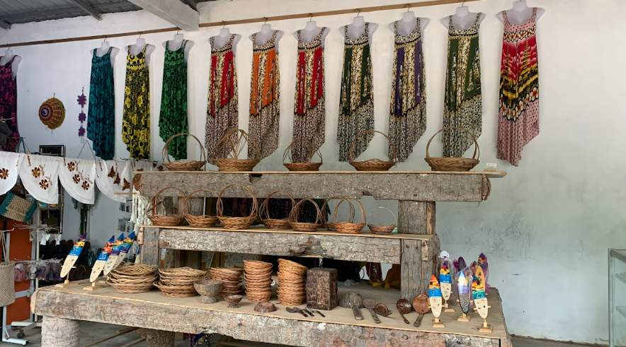
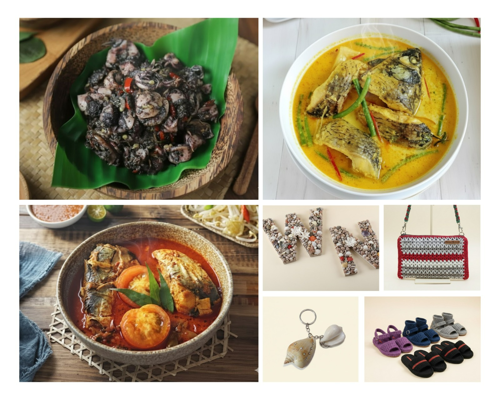

28 Desember 2025

Eh, udah tau belum kuliner & oleh-oleh hits di Ekowisata Mangrove Pandang Tak Jemu?🤔 Kalau kamu main ke Ekowisata Mangrove Pandang Tak Jemu, siap-siap deh lidah dan matamu dimanjakan bareng! Nggak cuma pemandangan mangrove aja yang bikin adem, tapi juga kuliner khas lautnya yang bener-bener ngangenin dan deretan oleh-oleh khas Ekowisata Mangrove Pandang Tak Jemu juga siap bikin kamu kalap belanja! Soal makanan, dijamin deh kamu bakal jatuh cinta sama cita rasa khas desanya. Ada Sotong Masak Itam yang gurih legit, Ikan Asam Pedas dengan kuah segar yang nendang banget, sampai Ikan Masak Kuning yang aromanya bikin perut auto lapar. Masakannya mungkin sederhana, tapi rasanya? Rasanya bikin nagih! cocok banget dinikmati sambil ngobrol santai bareng teman atau keluarga😋.

Jangan langsung pulang habis makan enak ya! Siap-siap kalap, karena di sini ada banyak banget kerajinan lokal yang estetik! Mulai dari tas dan sandal rajut, gantungan kunci lucu, daster batik, hiasan dari hasil laut, sampai kain batik bakau yang tampilannya classy abis. Semua produk dibuat handmade sama warga desa yang super kreatif. Masih kurang? Tenang, ada banyak souvenir khas Ekowisata Mangrove Pandang Tak Jemu lain yang wajib kamu bawa pulang!🛍️ Main ke Ekowisata Mangrove Pandang Tak Jemu nggak cuma buat nikmatin view alam dan mangrove nya yang kece. Kamu juga bisa kulineran khas desa, belanja karya lokal, dan dapet pengalaman seru yang bakal susah move on!😋 Info lebih lanjut atau hubungi pengelola langsung bisa cek di sini: Kontak Resmi Ekowisata Mangrove Pandang Tak Jemu